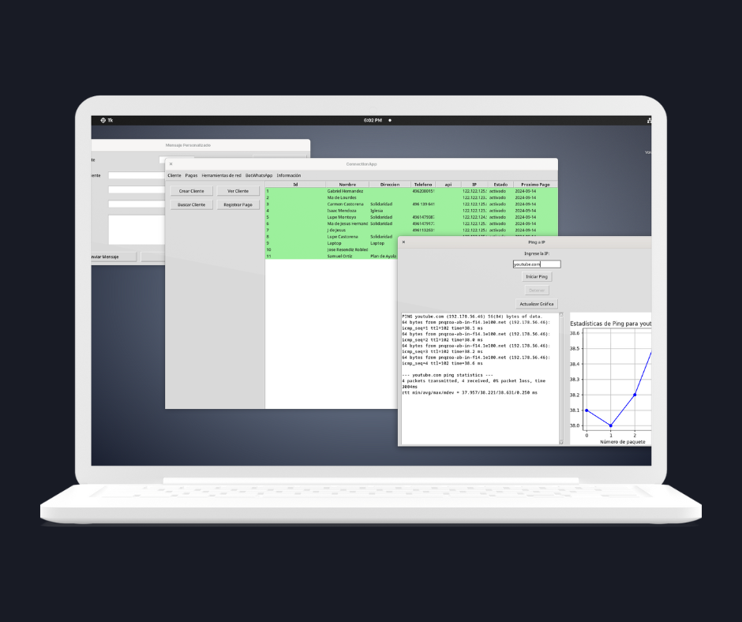
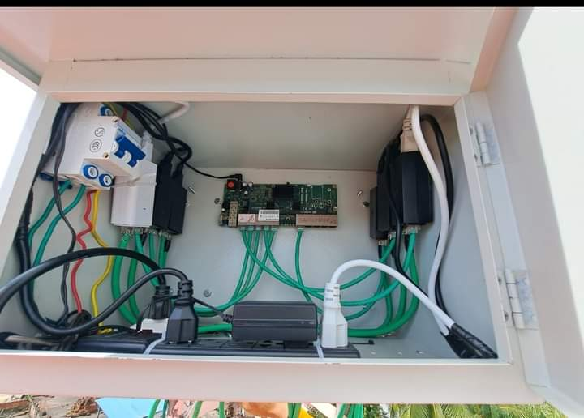
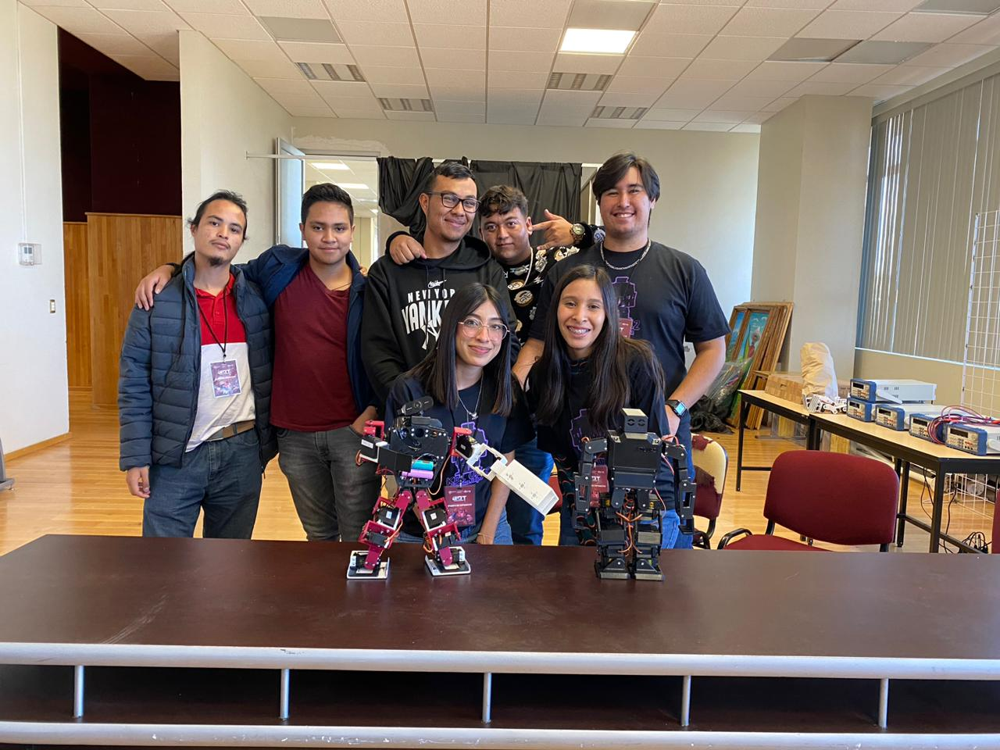
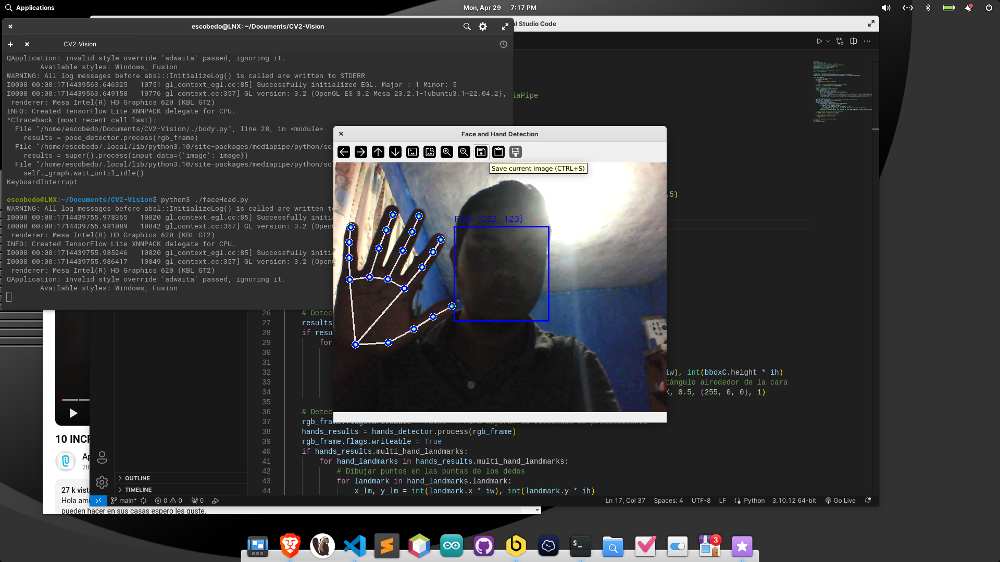

Acerca de mí

Mi nombre es Ricardo Escobedo, Ingeniero en Sistemas Computacionales con especialidad en desarrollo de software.
Soy una persona con valores, ética y principios. Listo para ayudar de la manera más efectiva.
Tengo amplios conocimientos en diferentes áreas gracias a mi curiosidad por las cosas.
- Electrónica e IoT
- Python
- Redes inalámbricas y redes de computadoras
- Automatizaciones
- Electricidad e instalaciones eléctricas de baja tensión
Proyectos

ConnectionApp
Software desarrollado especialmente para usuarios con un WISP o ISP.
- Compatible con Microtik usando Simple Queue para el control del ancho de banda
- Generador de recibos modificables, logo, título, mensaje
- Cambio de velocidades, bloqueo automático y manual
- SpeedTest integrado
- Capacidad de reinicio de antenas Ubiquiti
- Realizar pruebas de ping

Wisp DOBLENET
Proveo internet a una comunidad de manera local - Tierra Blanca Loreto Zacatecas.
- Usamos tecnologías Microtik para el control y Ubiquiti para la distribución
- Hacemos uso de Ubuntu Server para asignar a los clientes mediante DHCP Server
- Scripts en Python para automatizaciones en Debian
- ConnectionApp como software de control del WISP

BotChallenge - Arnold T-800
Desarrollo de un robot usando una Esp32 como cerebro, servos e impresión 3D.
- Control mediante conexión Bluetooth y reconocimiento facial con Raspberry Pi
- Desarrollo de habilidades en trabajo en equipo, coordinación y comunicación
- Implementación de inteligencia artificial para reconocimiento facial
- Modelado e impresión 3D

AI App - Testing
Aplicación en Python para usuarios de Linux, implementando reconocimiento facial usando la API de Google.
Habilidades
- Python
- Electrónica
- Kotlin
- Electricidad y circuitos eléctricos
- Linux - Debian, OpenSuse, Fedora y RedHat